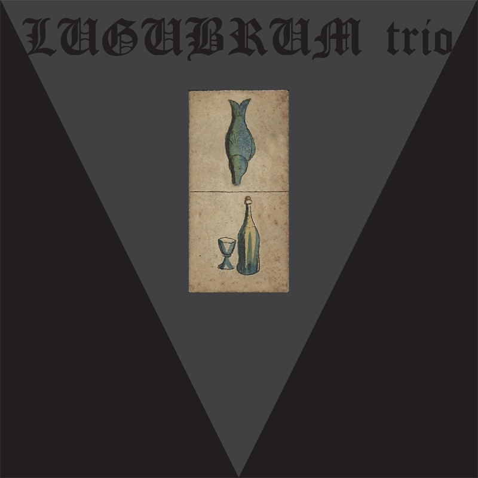
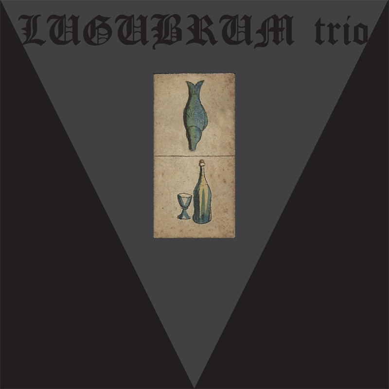
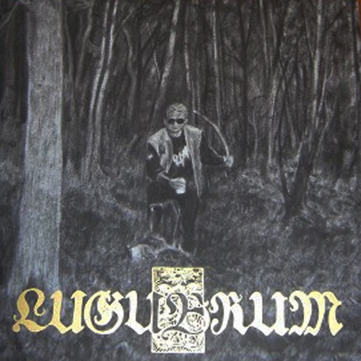
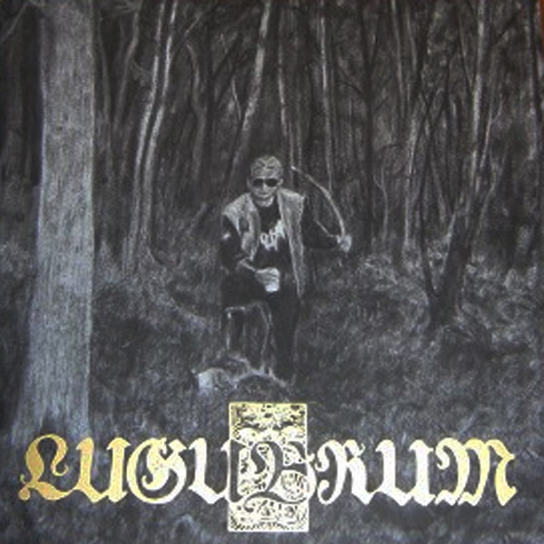
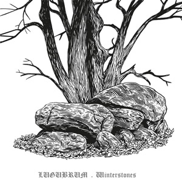
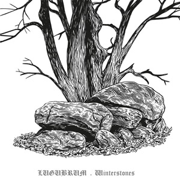

PLAGE CHÔMAGE (CD/LP '20)

- Plage Chômage
- Seelenglut
- Foefganger
- Muzzammil
- Goldhut
- Fatty Streak
All Music and lyrics by Midgaars and LUGUBRUM trio MMXVII- MMXIX
Midgaars - vocals, Hammond, guitar, trombone, glockenspiel,
flutes, tabla, percussion
Svein - drums, jawbone
Noctiz - bass
Guests:
Sleppe - add. vocals on Seelenglut, Foefganger, Muzzammil,
Goldhut and Fatty Streak
Barditus - add. vocals on Foefganger and Fatty Streak
Plage Chômage was recorded and mixed at CR Studio, St.
Amands, by P.J. Turlinckx
Mastered by Pascal Altena
Photography by Storm Calle
LP 2020
Aphelion Productions
CD 2020
Those Opposed Records
BRADOBROEDERS (Split 12" with URFAUST '19)
- Bruine Moeder
- Scabreusheden Uit Het Tuchtarsenaal
Vinyl, 12", Single Sided, EP, Etched, Limited Edition
12" 2019
Vàn Records
(vàn299)
WAKAR CARTEL (CD '18/LP '17)

- Meester van een Wortel (Intro)
- Het Vuur van de Meester
- Tussen Honden
- Orakelsnoer
- De zoete geur van de Meester
All music by Midgaars and LUGUBRUM trio
Lyrics by Midgaars
LUGUBRUM trio is:
Midgaars - vocals, guitar, Wurlitzer piano, trumpet,
glockenspiel, claves, gong
Svein - drums
Noctiz - bass
Guests:
J. Dellaert - double bass
J. Focquart - trombone
D. Huylebroeck - percussion
T. Rommel - barotine sax
Sleppe - spoken word
WAKAR CARTEL
was recorded at Boma Studio, Ghent, by F. Segers
Mixed and produced by David Huylebroeck at Old Barrel
Studios
Mastered by Karel De Backer
Band photography by Storm Calle
LP 2017
Aphelion Productions
(AP106)
CD 2017
Those Opposed Records
HERVAL (CD/LP '15)
 

- Aalschuimix
- Vergeeldetruidrager
- Herval
- Dorstige Vis
- Aldi Iacta Est
- Uri Noir
- Comata
- Herval Herval
Midgaars - vocals / guitars / banjo / flugelhorn /
organ
Svein - drums
Noctiz - bass / add. vocals
Produced by Noctiz and Lugubrum Trio
Recorded and mixed at the Lugubrum Sweatshops in St.
Amandsberg / St. Amands
Percussion on "Herval Herval" by David
Huylebroeck
Percussion mixed at Old Barrelt Studios by David
Huylebroeck
Album Concept / Design by Midgaars
Herval is dedicated to Barditus...
LP 2015
Aphelion Productions
(AP095)
CD 2015
Those Opposed Records
(TOR064)
HET AALSCHUIM DER NATIE (Split 7" with URFAUST '15)

- Kapitaalschuim
- Zelfkastijder
"Kapitaalschuim" was recorded by Noctiz and
Lugubrum trio in a stinking wine cellar in 2014/2015
Lugubrum trio is: Midgaars (v/g), Svein (d), Noctiz (b)
7" 2015
Vàn Records
FACE LION FACE OIGNON (LP '11/CD '12)
- El Arish
- Graza
- Jaffa
- Acre I
- Mont Tabor
- Acre II
FLFO était enregistré en l'an CCXVIII
Toute musique par Lugubrum
Lugubrum est MBSN
Vive l'Oignon! Vive Ross!
LP 2011
Aphelion Productions
CD 2012
Those Opposed Records
N.O.I.R. (SPLIT LP '09)

- Chant XIII
- Burg Dom
- Sophia
- XIII. JI. XIII
- In den ghoot by kaerschlight
- The dog in the doorway
- Isirhe
Barditus - vocals
Midgaars - guitar
Svein - drums
Noctiz - bass
Bhodidharma - saxophone
Recorded live at Paradox, Tilburg (NL) on May 28th,
2009
Engineered by h.
LP 2009
Those Opposed Records
(TOR017)
Playing Time: 38:34
ALBINO DE CONGO (Re-Release LP '14)
- kadurha
- lugwampinga
- kabondobondo, muborobondo
- mushole
- bwikalabalume
- kurlerha omugongo
- isirhe
adc was recorded at studio Bodo, 01- 03 2008
all musick by LUGUBRUM:
Barditus (v), Midgaars (g), Svein (d,s), Noctiz (b)
guests: h. (g), Stain (ag), Slosse (v)
produced by Noctiz
project coordination by Antoine Bodo
lyrics by M. (thanks to Noel Benoit)
Congo Vol by Slosse
mastered by Ganymed
LP 2014
Aphelion Productions
ALBINO DE CONGO (CD '08)

- kadurha
- lugwampinga
- kabondobondo, muborobondo
- mushole
- bwikalabalume
- kurlerha omugongo
- isirhe
adc was recorded at studio Bodo, 01- 03 2008
all musick by LUGUBRUM:
Barditus (v), Midgaars (g), Svein (d,s), Noctiz (b)
guests: h. (g), Stain (ag), Slosse (v)
produced by Noctiz
project coordination by Antoine Bodo
lyrics by M. (thanks to Noel Benoit)
Congo Vol by Slosse
mastered by Ganymed
CD 2008
Old Grey Hair Records
DE WARE HOND (CD '07 / LP '20)

- Movement I - opwaartse hond
- Movement II - the dog in the doorway
- Movement I - neerwaartse hond
- Movement II - flinke hond von hell slaapwel
A recorded february 04-05 2006 at studio Hombre,
Stavelot
Barditus / vocals, M. / guitar, h. / guitar, Svein /
drums, Stain / bass, Mantak Chien / organ, melodica
recorded live in studio, without overdubs, on digital
equipment, mixed at Mirador, produced by h.
B recorded june 24-25 2006 at studio Lugubrum, Ghent
Barditus / vocals, M. / guitar,tabla, h. / guitar, Svein /
drums, Stain / bass, Fulco / organ, Bhodidharma / sax
recorded live in studio, without overdubs, on analogue
equipment, mixed at Ganymed, produced by Alfred Niezny
musick by Lugubrum, lyrics and cover art by M., photography by Lugubrum, mastered at Ganymed
CD 2007Old Grey Hair
(OGH004)
LP 2020
Aphelion Productions
(AP099)
Playing Time: 45:40
LIVE IN AMSTERDAM : TRAMPLED BRASS / MIDGET ROBES (CD '06/LP '15)
- Hunted Ordure
- De Vette Cuecken
- Udder of Death
- Pankraker
- Fliegenpilz
- At the Base of Their Tail
- Ratteknaeghen
- Voos
Barditus - vocals
Midgaars - guitar
Svein - drums
h. - guitar
Master Stain - bass
Bhodidharma - prepared saxophone
Lugubrum’s first official live album offers a
complete rendition of the band’s performance on june
28th 2005 at the Amsterdam Paradiso, supporting Sunn
o)))
CD 2006
Old Grey Hair
(OGH003)
LP 2015
Aphelion Productions
(AP098)
Playing Time: 46:24
HEILIGE DWAZEN (CD '05/LP '06)

- Holy Fools Embodied
- The Kiss on the Anus
- At the Base of Their Tail
- Though Chained
- We Slyly Sucked Stolen Bread
- On Anemone Meteorites
Barditus - vocals
Midgaars - guitar
Kundalingus - bass
Hiëronymus - guitar
Master Stain - bass
Svein - drums
‘HEILIGE DWAZEN’ was recorded and mixed at
LUGUBRUM studios II, nov.-dec. 2004 I midgets I all musick
by LUGUBRUM I produced by H. and LUGUBRUM I saxophone by
BHODIDHARMA I intro read by SLOSSE I lyrics and cover art
by M. I Graphic lay-out by S.I break I mastering by
Ganymed I back cover photo by K.V. I remember : your
discomfort and damaged minds nourish LUGUBRUM as always! I
free !
CD 2005
Blood, Fire, Death
(BFD023)
CD 2006
Old Grey Hair
(OGH001)
LP 2006
Old Grey Hair
(OGH002)
Playing Time: 45:34
DE VETTE CUECKEN (CD/LP '04)

- Apéritif
- Attractive to the Flies
- In den Ghoot by Kaerschlight
- De Maeghere Cuecken
- De Vette Cuecken
- Dust Binst Drinken
- Robust Shades of Brown
- Poussy-café
Barditus: vocals
Midgaars: guitars, banjo, mandolin
Svein: drums, synth.
Kundalingus: bass
Bhodidharma: alto saxophone
Cooked & mixed at Lugubrum Studios between February
and April 2002
Mastering by Ganymed prod. Ghent
All ingredients by Lugubrum
CD 2004
Blood, Fire, Death
(BFD017)
LP 2004
Iron Pegasus
(IP036)
Playing Time: 40:40
AL GHEMIST (Split CD with FINSTERNIS '02)

- Intrede
- Hunted Ordure
- St. Revel
- Marginatus
- Silencer Of Apices
- Temptatie
- Boccigh Besaait
- Uittreding
- Intro
- Hunting Hellfury
- Grafgeraas
- De Verdorvenen
- Immernacht
- De Neveloorden
- War-witch breeding
- Outro
Barditus: vocals, guitar
Midgaars: guitars, bass
Svein: drums, synths
Zwelg: bass, lard
Recorded & mixed at Lugubrum Studios between December
'00 and February '01
All music by Lugubrum '00
2002
Full Moon Productions
(FMP666)
Playing Time: 32:08 (Lugubrum) + 28:06 (Finsternis)
AL GHEMIST (LP '01)
- Intrede
- Hunted Ordure
- St. Revel
- Marginatus
- Silencer Of Apices
- Temptation
- Boccigh Besaait
- Lingering Emptiness *
- Uittreding
Barditus: vocals, guitar
Midgaars: guitars, bass
Svein: drums, synths
Zwelg: bass, lard
Recorded & mixed at Lugubrum Studios between December
'00 and February '01
All music by Lugubrum '00 except (*) '94
2001 Painiac records (Pain005)
Playing Time: 41:00
BRUYNE TROON (CD '01)

- Invade (Stinker of Stink)
- Gekloofd
- Low Dog
- Bruyne Troon
- Druipstaartend
- Kleigerukt
- The Great Dressler
- Het Spook van de Goudmijn
- Sponge
- Staertgebroet
- Kannibaal
- Pump Room Brawl
- Old Grey Hair
- Schaambaard
- Holebeard Blues
- Expunge
Pimping Midgaars: vocals, guitars, banjo, ...
Juan Solo: drums, synth, tail, ...
Booby Fatt: bass, anus, ...
Recorded & mixed at Lugubrum Studios between March and
June 2000
All music by Lugubrum '97-'00
2001 Skaramasax records (SKR004)
Playing Time: 68:09
DE TOTEM (Re-Release LP '13)
- Intro: Beer
- Hoornkluiten
- Udder of Death
- De Totem
- Ratteknaeghen
- Beard of Disease
- Midgets of Evil
- Inner Magma
- Reet Reel
- Voos
- Outro: Oui Maitre
- Paardeberg
- Nooitgedacht
- Ratteknaeghen (live)
- Hoornkluiten (live)
Barditus: vocals
Boer Zwelg: bass, anal antics
Boer Svein: drums
Boer Midgaard: (bottleneck) guitars, 5-string banjo,
bones
Recorded & mixed at Lugubrum Studios between February
and June 1999
All music by Lugubrum '98-'99
2013
Aphelion Productions
(AP061)
DE TOTEM (Re-Release CD '03)

- Intro: Beer
- Hoornkluiten
- Udder of Death
- De Totem
- Ratteknaeghen
- Beard of Disease
- Midgets of Evil
- Inner Magma
- Reet Reel
- Voos
- Outro: Oui Maitre
- Paardeberg
- Nooitgedacht
Midgaars: (bottleneck) guitars, 5-string banjo, bones
Svein: drums
Barditus: vocals
Zwelg: bass, anal antics
Recorded & mixed at Lugubrum Studios between February
and June 1999
Remastering was done Sept. 2002 by Ganymed prod. Gent
All music by Lugubrum '98-'99
2003
Blood, Fire, Death
(BFD010)
Playing Time: 59:21
DE TOTEM (CD '99)

- Intro: Beer
- Hoornkluiten
- Udder of Death
- De Totem
- Ratteknaeghen
- Beard of Disease
- Midgets of Evil
- Inner Magma
- Reet Reel
- Voos
- Outro: Oui Maitre
Barditus: vocals
Boer Zwelg: bass, anal antics
Boer Svein: drums
Boer Midgaard: (bottleneck) guitars, 5-string banjo,
bones
Recorded & mixed at Lugubrum Studios between February
and June 1999
All music by Lugubrum '98-'99
1999
Berzerker records
(BRZRK004)
Playing Time: 51:32
DE ZUIVERING (Tape Re-Release '06)

- Intro: Plaaggeesten
- Boegman met het boze oog
- Pankraker
- de Smeltkroes: het Madenmaal
- Lluagor de zuiverende
- Outro: Zwavelzwijnen
- Pankraker (Live)
Barditus: drums & vocals
Midgaard: guitar
Zwelg: bass
Recorded & mixed at Lugubrum Studios on friday the
28th of August 1998
All music by Lugubrum 1998
2006 Tanhu records
DE ZUIVERING (Split CD with Sudarium '98 / Re-Release LP '17)
 

- Intro: Plaaggeesten
- Boegman met het boze oog
- Pankraker
- de Smeltkroes: het Madenmaal
- Lluagor de zuiverende
- Outro: Zwavelzwijnen
- Lingering emptiness
- Before my eternal sleep
- Die Wiedergeburt
Barditus: drums & vocals
Midgaard: guitar
Zwelg: bass
Recorded & mixed at Lugubrum Studios on friday the
28th of August 1998
All music by Lugubrum 1998
CD 1998 Skramasax records - Lowlife records
(SKR003-LOW002)
LP 2017
Aphelion Productions
Playing Time: 38:25 (Lugubrum) + 29:10 (Sudarium)
GEDACHTE & GEHEUGEN (CD '97)

- Waar het vuur en de kraaien zingen
- Stahlhelm I
- Stahlhelm II
- Als de goden zwijgen
- Zomermoord
- Dampen uit een ondiep graf
- Lugubrum (instr.)
- Trollenkloof
- De vlam der krijg
- Het dromen der Berken
- De geheimenhelmen
- Mijn Koninkrijk van groen
Midgaard: guitars, bass, synth., lyrics and artwork
Barditus: drums and vocals (except on "Mijn
koninkrijk...")
Recorded & mixed at Lugubrum Studios between February
and November 1996
All music by Midgaard between August '94 and April '96
1997 Skramasax records (SKR002)
Playing Time: 60:56
WINTERSTONES (CD '95 / Re-Release CD/LP '15)
 

- Embracing the moonlit snowclouds
- Sose gilimida sin
- Aardmannen
- Ogenboom
- Dance of the winterking
- Foltas
- Fliegenpilz
- Winds enter my mouth
- Black hag
Midgaard: guitars, bass, synth., lyrics and artwork
Barditus: drums and vocals
Recorded & mixed at Lugubrum Studios in December
1995
All music by Lugubrum 1995
CD 1995 Skramasax records (SKR001)
LP 2015
Aphelion Productions
(AP085)
CD 2015
Those Opposed Records
(TOR065)
Playing Time: 43:33
PROMOTAPE ('94)
- Lingering emptiness
- Before my eternal sleep
- Die Wiedergeburt
Diabolus: drums & vocals
Count Midgard: guitars & bass
Recorded & mixed at Lugubrum Studios in May 1994
All music by Lugubrum 1994
Playing Time: 13:33
BLACK PROPHECIES (Demo '93)
- Predicting a Dark Age
- Teutonic Triumph
- March of the Final Sunset
- Wolves Howl as Her Soul Departs
- Hate
- Land of 3 Moons
Diabolus: percussion & vocals
Count Midgard: guitars & add. howls
Playing Time: +/- 30:00